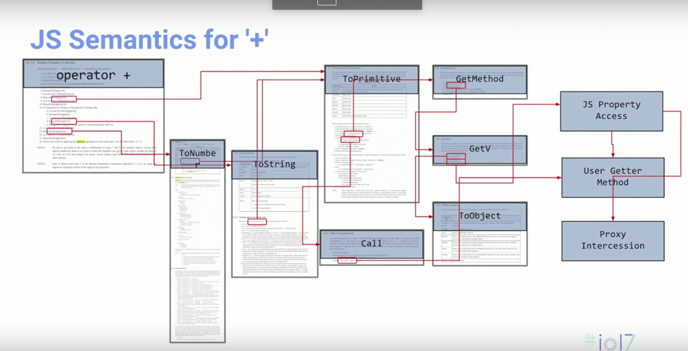
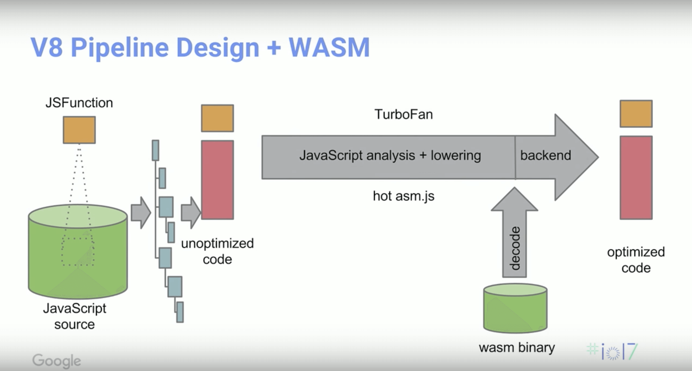

WebAssembly 尝试研究报告（三）
在前两次的研究报告，我们中主要介绍了 WebAssembly 在代码方面的应用与编译运行的基本流程。抛开复杂的开发编译工具链，我们来看一看 WebAssembly 底层的实现机制和原理。在编译器层面，WebAssembly 到底做了哪些事情，提供了怎样的优化？这些优化是怎样作用于实际的代码中的？让我们一起来研究一下。
“WebAssembly 是一种全新的二进制代码格式，我们可以把类似 C/C++ 等静态类型语言的源代码编译成 WebAssembly 格式，以便将其运行在浏览器环境当中。”这段话是官方对 WebAssembly 的解释，我在这里将它翻译过来。接下来我们会针对这段话展开深入的分析，从编译器底层、编程语言等方面来探讨 WebAssembly 的秘密。
首先，我们要知道静态类型语言和动态类型语言的区别。动态类型语言是指在代码运行期间检查数据类型的语言，用这类语言编程，在编写代码时不会给变量指定类型，而是在解释运行到该句代码时通过一系列的上下文判断来推断得出该变量的实际数据类型。而静态类型语言正好相反，这类语言需要在运行前进行编译时检查变量的类型。解释器和编译器，解释器的启动和执行速度较快，但由于解释器是采用“逐行”的方式来解释运行代码，因此在遇到类似循环等操作时，同一段代码在每次运行前都需要进行解释，大大降低了程序运行的性能。编译器则正好相反，在代码运行前，编译器需要一段时间来对代码进行编译，但在编译过程中可以对源代码的结构进行优化。为了解决解释器的低效问题，包括 V8 在内的众多优秀的 JS 引擎开始把静态编译器纳入自身的引擎系统中，这便形成了一套全新的编译器架构 - JIT 编译器模式。
JIT 编译器的核心优化机制是 PGO（Profile Guided Optimization）。PGO 的基本原理是：在解释器解释运行代码期间会根据每行代码的执行次数不同，分别为每行代码做不同的标记（warm / hot）。warm 代表该行代码运行次数较多，而 hot 则表示该行代码在单位时间内运行的次数比 warm 更多。如果一段代码被标记为 warm，那么 JIT 就会把该段代码送到基线编译器（Baseline Compiler）去进行编译。由于基线编译器只能在短时间内进行局部的优化，因此被标记为 hot 的代码段随后还会被送到“优化编译器”进行再次的优化。在 V8 中，所有被标记的代码都会首先送到 “full-codegen” 基线编译器进行优化，被标记为 hot 甚至是 very hot 的代码段会被送到 “Crankshaft” 或者 “Turbofan” 优化编译器进行再次的优化。编译器在编译对应代码段时还会在本地存储已编译好的版本，这样下次再遇到同样的代码段便可以直接使用，省去了重新编译的时间。
1. 传统 JS 引擎的工作流程：
function add(a, b) {
return a + b;
}
对于上述给出的这段简短的 JS 代码，引擎在遇到加号 “+” 运算符时，并不是直接将两个变量的值相加。由于我们在程序运行前无法判断加号运算符两侧传入变量值的实际类型，因此也就无法判断是应该将两个变量的值当作数值(整型、浮点型)相加还是应该当作字符串进行拼接，甚至是当作对象来进行处理。JS 引擎会根据 ECMAScript 的标准来对加号运算符进行一系列判断才能够得到最后的运算结果。对应加号运算符的 ECMAScript 标准如下图所示（图片来自 Google IO 2017）：

可以看到，传统的 JS 引擎在解析代码时会经过复杂的类型判断过程才能得到最终的计算结果，而这使得动态语言的代码执行效率被大大降低。

我们以 V8 的 Pipeline 结构来讲解 JS 引擎处理代码的基本过程。首先，JS 引擎会分析源代码的结构并生成一个 AST（抽象语法树），该 AST 展示了源程序的逻辑结构在内存中的抽象表现形式。接下来，AST 经过一个 “full-codegen” 全代码编译器前端被直接编译成了未经优化的中间表示层（IR）代码。在得到了 IR 代码后，V8 的优化编译器 “TurboFan” 会继续分析 JS 源码来找出那些运行速度较慢的源码并再次对它们进行优化。这个过程结束之后，再将经过处理的 IR（Intermediate Representation） 层代码经过一个编译器后端重新生成优化后的机器码。
在基于 ASM.js 的优化流程中，最后生成的 ASM.js 代码属于 JS 的一个子集，因此最后被 JS 引擎解释时同样还需要经过分析代码、生成 AST 和重新优化等过程，而这些过程都是需要消耗 CPU 资源的，因此这种优化只能在某种程度上改善性能。而 WebAssembly 则直接从一个编译器后端进行加载，省去了所有编译器前端包括代码分析、生成 AST 、代码编译和优化在内的一系列过程。因此相较于 ASM.js 可以大大提高代码的执行效率。
另一方面，对于实现同样功能的一段 C/C++ 代码，WebAssembly 二进制格式的体积会比压缩后的 ASM.js 体积小很多。WebAssembly 在浏览器中会运行在自己独立的沙盒环境当中，因此也无需担心内存数据泄露等安全性问题。
接下来我们来看一下 WebAssembly 的内存模型。WebAssembly 代码对应的程序会被运行在一块连续的内存上，但其执行堆栈却完全从 WebAssembly 程序的内存段中独立出来，在执行堆栈中存储着 WebAssembly 程序当前需要用到的变量的值。由于执行堆栈的分离使得我们无法通过读取或改变 WebAssembly 程序所在内存段数据来改变各个变量的值，而这为 WebAssembly 的安全性提供了保障。